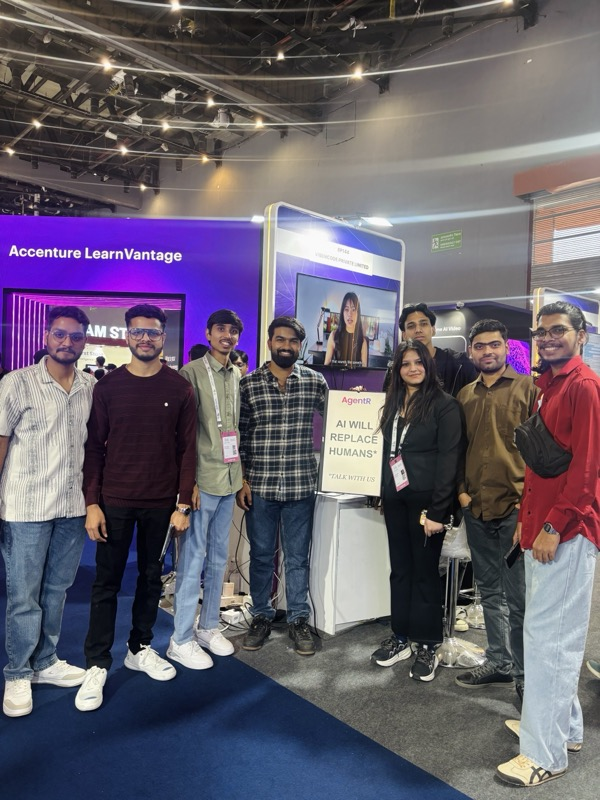

Not software with some AI features.
We are rebuilding hiring from first principles. Sourcing and workflow got solved years ago. Judgement never did, and every hire still routes through it.
- The bottleneck moved from reading applications to trusting them.
- We are building the Hirer Intelligence Layer, not another ranking layer.
- Funded from inside for fifteen months. This is the first money we have asked anyone for.
Why now.
- the signalAnyone can write a senior-sounding career in an afternoon
A language model can make any resume read like the right one. It cannot invent an outcome that never happened. Every screening tool built before 2023 assumes the document is evidence. It is now a draft.
- the toolingApplicant tracking rewards the people who studied the filter
Keyword matching hands the shortlist to whoever read a blog post about resume optimisation, not to whoever did the work. Faster ranking of the same bad signal does not fix this.
- the asymmetryAI armed one side of the table
Resumes are written by models. Applications arrive in volumes no team can read. Cluely sits in live interviews, feeding answers through an overlay the interviewer cannot see. All of it is cheap and instant now. Nothing on the hiring side was built for any of it.
- the answerRead everything, check what it claims, then form a view
Reading is cheap now, which is why fifty tools do it. Forming a view you can defend, with the evidence attached, is the part the stack never had. That is the layer we are building.
What is already running.
Not a roadmap. This is the system, in production, today.
Every application read
Parsed into structured fields, contact details stripped before scoring, hidden prompt injection removed and retained. Nothing is filtered out before a human sees it.
Claims checked against the public record
Roles and achievements are searched against public sources and returned with one of six verdicts and the reasoning behind each. This is inference from evidence, not a formal background check, and we say the same thing to buyers.
Structured interviews at the bar you set
Built from the role, scored against a rubric written in advance, taken on the candidate’s own time. No calendars, no interviewer in the room.
Integrity, honestly scoped
Browser signals are advisory. A native macOS Guard can hold the room shut. Neither ever moves a score, and nothing auto-rejects. We would rather say that than imply certainty.
Four inputs. One read. Every score opens into the evidence behind it.
How we got here.
Slower than a funded company, and pointed somewhere specific. Everything below has already happened. Where it goes is further out. The hirer’s instrument today. The trust layer both sides route through when the agents take over.
- originBuilt for our own hiring first
Two hundred resumes for one engineering role. Half claimed the same achievement, two could prove it. We were reading every one by hand, losing weekends to it, and still getting it wrong. AgentR was the thing we needed and could not buy.
- 2025Shipped twice
v1 in April, v2 in July. Two Product Hunt launches, both well received. Every feature answered a problem we had that week.
- 10,000+Applications, in production
Run through our own hiring. Fifteen months of a real company depending on it, which is the difference between a product and a demo.
- fundedFrom our own work
Client services revenue and years building AI systems paid for every line of this, start to finish.
- Feb 2026We took the theories to the market

India AI Impact Summit, 2026 Three days at this booth, testing whether any of it held up outside our own building. Almost every HR leader who stopped told us the same thing, unprompted: their hiring is failing and they know it. Nobody argued with the problem.
- Jul 2026Phase 3, shipped
The largest update we have built, drawn almost entirely from what the summit told us.
What the round is for.
We have not sold this yet. That was the sequence: build it, live on it, then go. A pre-seed cheque and twelve months, with one job — scaled-up GTM, the one thing our bootstrapped revenue was never going to fund. We are not raising to keep the lights on. We are raising to stop being slow.
Our views.
The arguments behind the product, at length.
The one we get asked most: why a foundation model company does not simply build this. Labs absorb thin products, single capabilities dressed as companies. This is not one, and no lab is in the room when a hire is made.
Every release they ship makes this layer better. None makes it unnecessary.

When everyone is using bots, how do you find the humans who matter?
Keyword matching rewards whoever optimised their resume with the same model the recruiter used. The case for reading a career as a story, and being able to show the reasoning.
Read it →Read the whole case.
This page is the argument. The deck is the arithmetic. Market sizing, burn, the ask, and the twelve-month plan. Ask and we will send it over in under two hours.